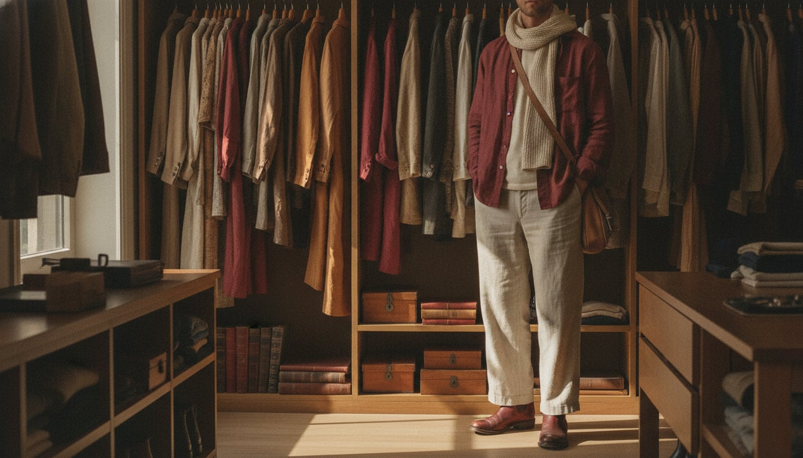
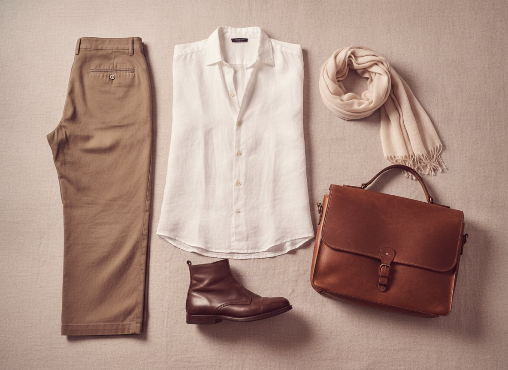
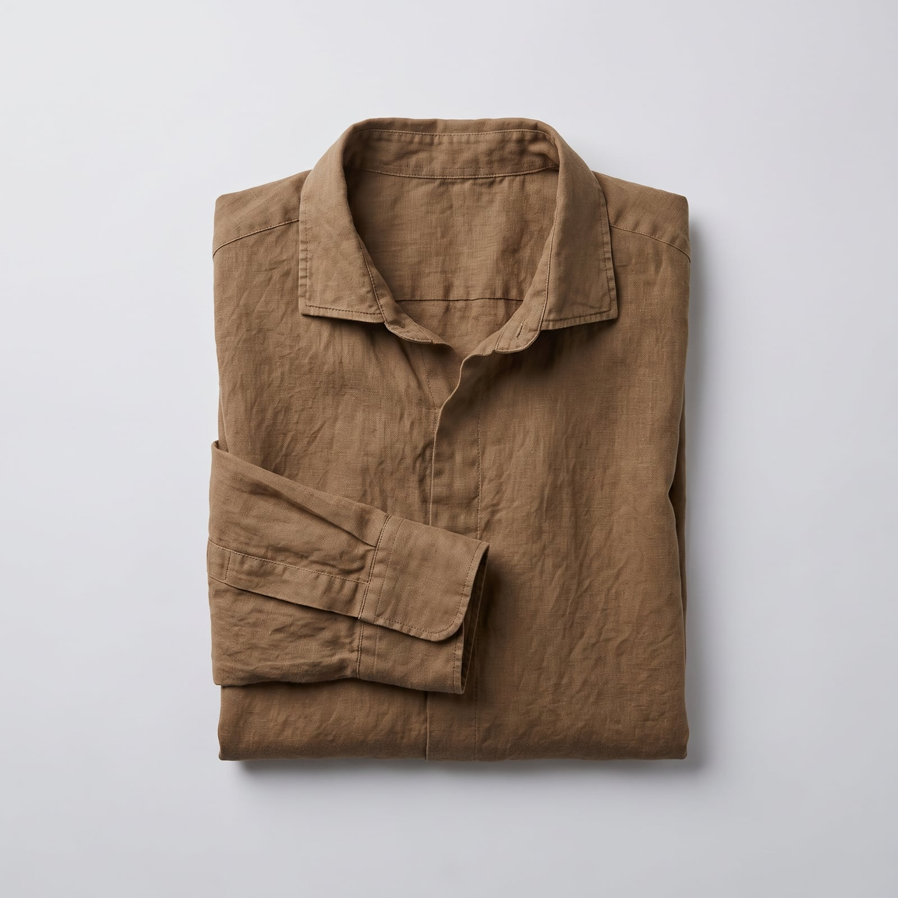
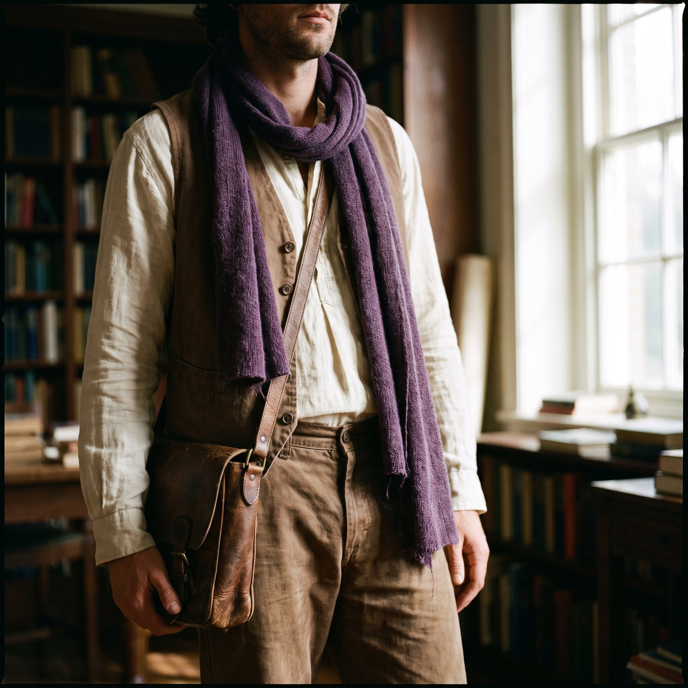
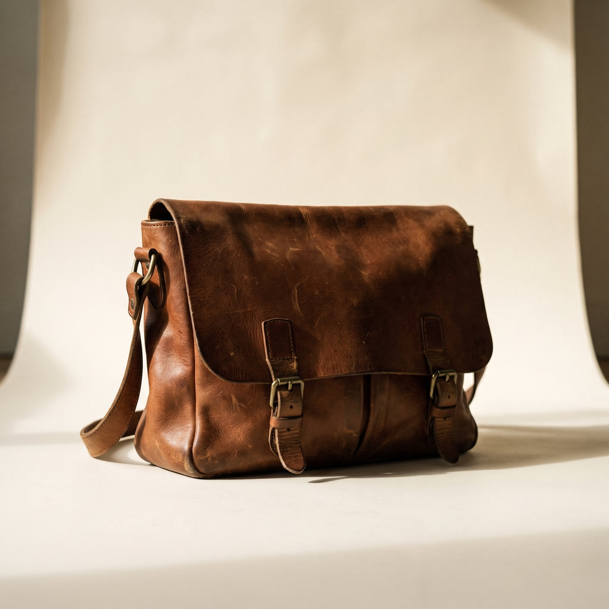
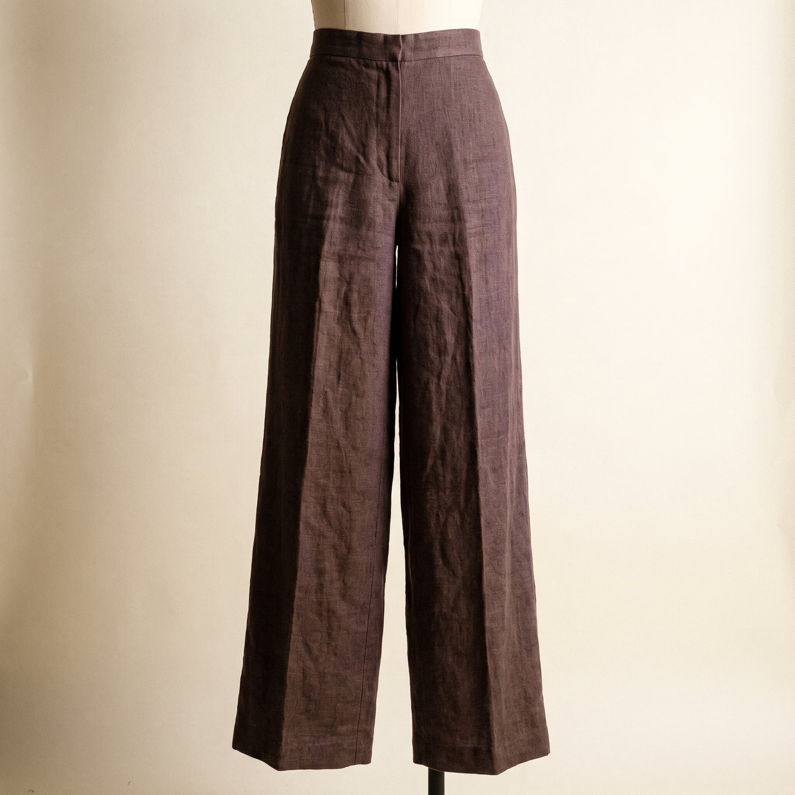
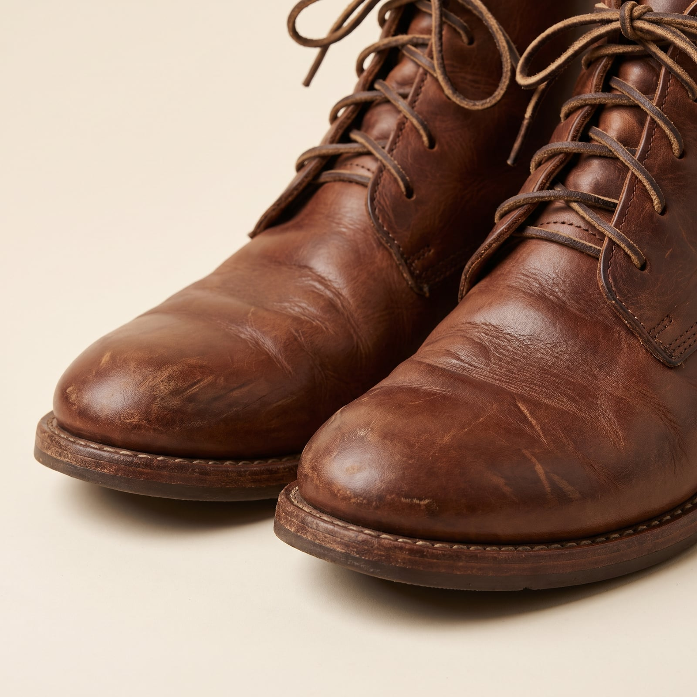

The Bohemian
The bohemian wardrobe descends from the artists' quarters of nineteenth-century Paris — Montmartre garrets where painters and poets, broke by choice as much as circumstance, dressed in whatever draped well and cost little, then handed the aesthetic down through Left Bank cafes, 1960s folk revivalists, and every art-school studio since. The through-line was never a specific garment so much as a specific refusal: to dress for a job that wasn't the work itself.
The trademark features favor texture and drape over cut: loose linen shirts with a sleeve rolled or a button gone missing without much concern, scarves wrapped rather than knotted properly, earthy and sun-faded color pulled from raw pigment rather than a color chart. Layering happens intuitively, a shirt over a shirt, because warmth and looking interesting turned out to want the same solution.
It suits people for whom appearance is a byproduct of a life spent making things, not a project of its own — who'd rather a garment show its wear than hide it. There's a real romance in the imprecision: a paint stain reads less as an accident than as a credential.
- Loose linen shirts, sleeves rolled, buttons occasionally optional
- Scarves wrapped loosely rather than knotted with precision
- Earthy, sun-faded color pulled from raw pigment, not a swatch book
- Layering that happens intuitively — a shirt over a shirt, warmth as an afterthought
- Well-worn leather satchels and boots, valued more the rougher they get

The Loose Linen Shirt
Painters and poets in nineteenth-century Montmartre garrets wore whatever draped well and cost little, and loose linen became the wardrobe's foundational garment almost by default rather than design.
Heavier, artisanal linen with genuine hand-finished details.
Shop this →French or European mill linen, often naturally dyed in small batches.
Shop this →
The Wrapped Scarf
A scarf wrapped loosely rather than knotted with precision borrows from a long romantic tradition of dressing for warmth and texture rather than correctness — the imprecision is the point, not an oversight.
Real texture and natural dye character at a low price.
Shop this →Better fabric weight and more considered, artisanal color.
Shop this →Small-batch, often naturally dyed, with a hand no mass factory replicates.
Shop this →
The Leather Satchel
A worn leather satchel, valued more the rougher it gets, descends from the same practical bags artists and writers have carried supplies in for centuries — the wear pattern itself becomes a kind of personal history worn on the outside.
Genuine full-grain leather that will patina with wear.
Shop this →Made to order, often by a single craftsperson, in leather chosen specifically to age well.
Shop this →
The Wide-Leg Trouser
A roomy, wide-leg trouser in undyed or naturally dyed cotton or linen lets this wardrobe move the way its shirts do — nothing fitted enough to restrict, everything cut for comfort over line.
Hand-dyed or naturally dyed cloth, often in small, irregular batches.
Shop this →
The Worn Leather Boots
A boot valued for its wear rather than in spite of it — scuffed, creased, resoled more than once — represents this wardrobe's clearest value statement: that a garment's history matters more than its condition.
Genuine full-grain leather that will age and crease naturally.
Shop this →Better leather and construction built to be resoled for years.
Shop this →Made to order, in leather selected specifically for how it will age.
Shop this →Buy linen and cotton pieces expecting them to wrinkle and soften considerably — that's the fabric doing exactly what it's supposed to, and a stiff, pressed version of this wardrobe misses the entire point of choosing these materials in the first place. Let layers happen intuitively rather than being planned in advance; a shirt thrown over a shirt because it got cold is more convincing than one styled to look that way.
Choose color the way the trademarks describe it — pulled from raw pigment rather than a swatch book — and let a satchel or a pair of boots get genuinely rough with use; this wardrobe is valued more the more lived-in it becomes.
Don't buy this wardrobe pre-rumpled from a boutique at full retail price — the softness and the wrinkles are supposed to be evidence of real time spent living in the clothes, and a manufactured version of that texture is easy to spot next to the genuine article.
Resist over-coordinating the layers — a scarf that matches the shirt that matches the trouser reads as styled rather than intuitive, and intuitive is the entire premise. A slightly wrong combination, arrived at without much thought, is closer to correct than a perfectly planned one.
The linen shirt gets worn alone, sleeves rolled, with sandals instead of boots -- the wrapped scarf stays regardless, more habit than necessity.
Layers of linen and wool combine intuitively, a heavier coat gets added without much planning, and the scarf finally does actual thermal work.
An old coat that's seen better days, an umbrella borrowed and never returned, and a general acceptance of getting slightly wet.
A heavier, likely secondhand coat, boots that have seen a lot of use, and gloves with at least one finger worn through.
For an opening or a reading: the good linen shirt (there's always one good linen shirt), the satchel swapped for something smaller, and shoes that have seen slightly less use than the boots.

Montmartre, a Greek island in the off-season, and anywhere with cheap rent and good light — the criteria are consistent even when the destination changes completely.
A trip gets extended indefinitely if the right cafe and the right light are both still working; there's rarely a firm return date built into the plan to begin with.
Rilke and Anais Nin, read slowly and often aloud to whoever's around, plus whatever's dog-eared and borrowed from a friend rather than bought new.
A book gets passed along again as soon as it's finished, with margin notes left in for the next reader as a kind of ongoing conversation.
Find it on Amazon →Nick Drake and Joni Mitchell, played at a volume that assumes the room is otherwise quiet, and whatever's spinning on vinyl at the one bar that still has a turntable.
A guitar within reach in most rooms, played somewhat well and often, more for the company than any audience.
Listen on YouTube →Plants in every window, thriving with an amount of attention that looks effortless but very much isn't, and art made by people he actually knows rather than bought from a gallery.
Furniture that arrived via a sidewalk more often than a store, refinished or left exactly as found depending on the mood that week.
See more on Pinterest →Life drawing classes, attended semi-regularly, and long conversations that run well past a cafe's closing time without either party quite noticing.
A journal that's more full than any calendar, kept less as a record of events than as a place to think out loud.
Learn more →